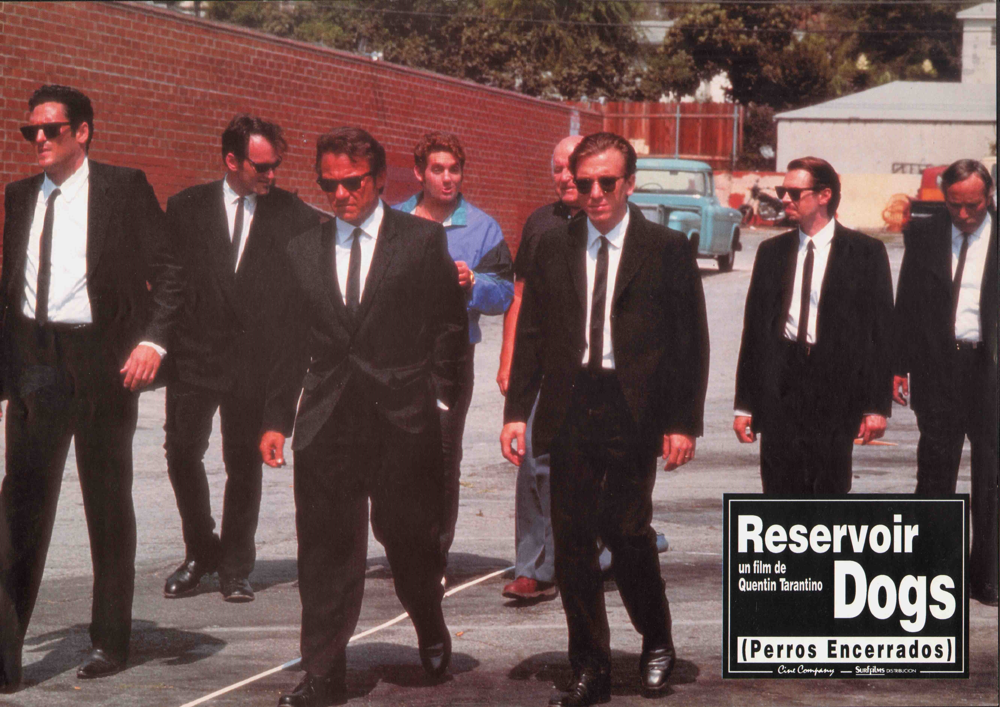
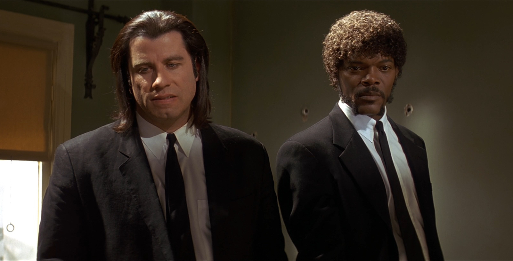
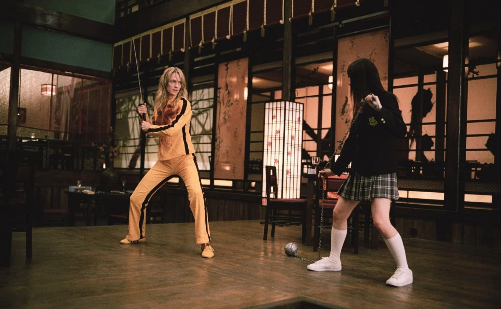
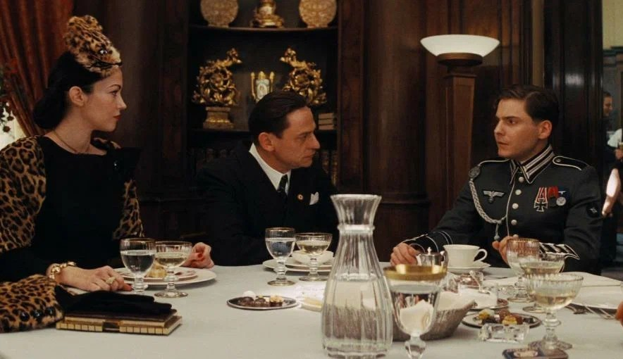
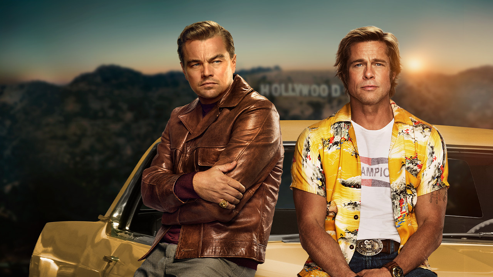
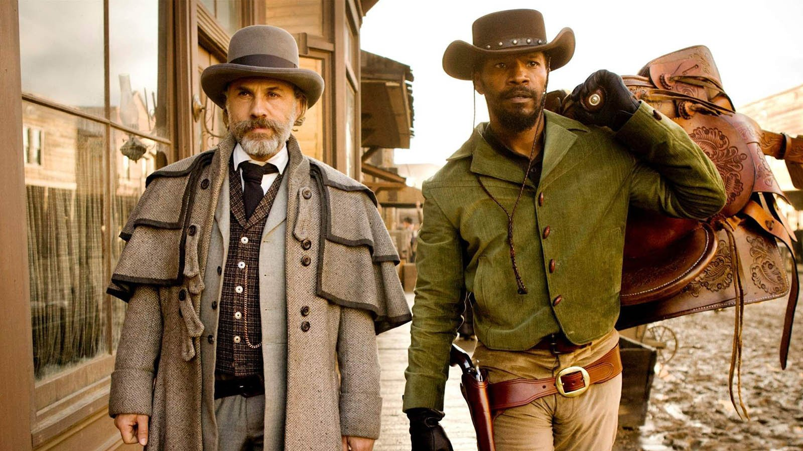

Квентин Тарантино
27.03.1963
Ноксвилл, США
Квентин Тарантино родился в 1963 году в Ноксвилле, штат Теннесси.
Его мать была медсестрой, а отец — актёром и музыкантом итальянского происхождения.
Он вырос в Лос-Анджелесе, бросил школу в 15 лет и работал в видеопрокате, где, по сути, получил своё кинематографическое образование.
Тарантино известен как яркий представитель постмодернизма в кино.
Его отличительные черты: остроумные диалоги, чёрный юмор, нелинейное повествование, эстетизация насилия и ненормативной лексики.
Любимые жанры — это спагетти-вестерн, криминальный боевик, эксплуатационное кино (эксплотейшн) и самурайские фильмы.
Известные фильмы

Бешеные псы
1991 год

Криминальное чтиво
1994 год

Убить Билла
2003 год

Бесславные ублюдки
2009 год

Однажды в... Голливуде
2019 год

Джанго освобожденный
2012 год
Награды

Премия «Золотой глобус»
3 победы
6 номинаций

Премия «Оскар»
2 победы
6 номинаций

Каннский кинофестиваль
1 победа
4 номинаций